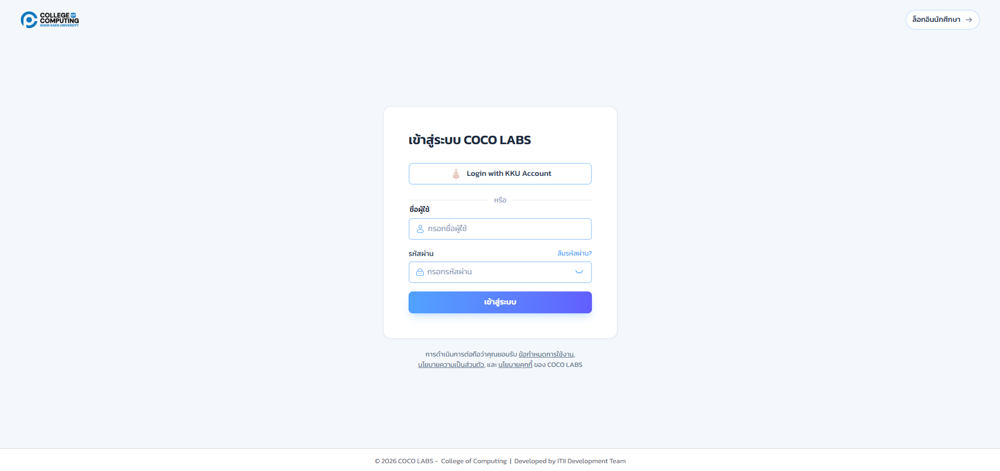
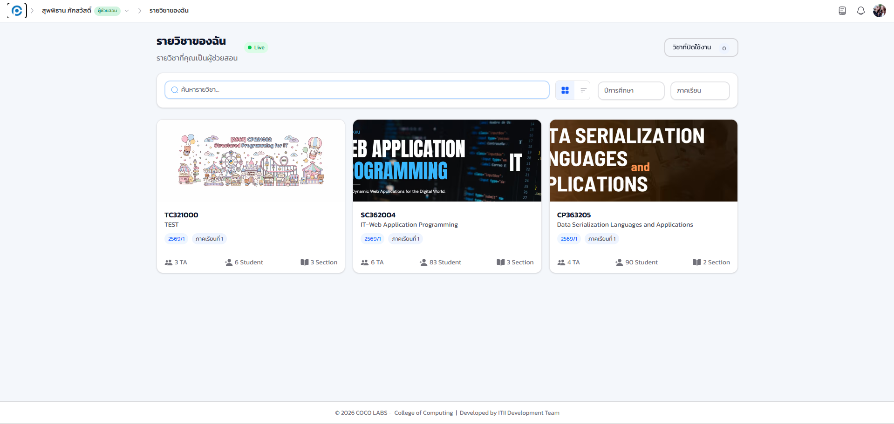
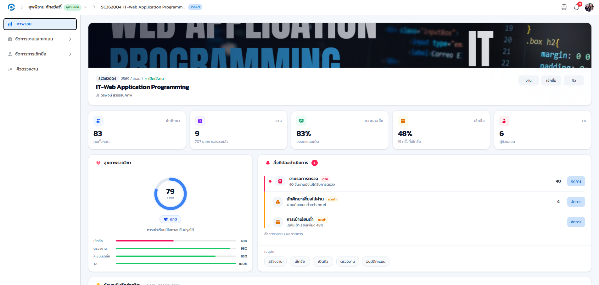
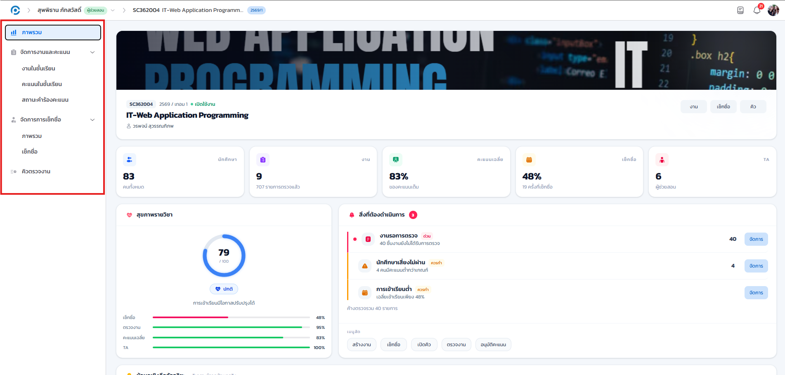

15.1 เกี่ยวกับคู่มือฉบับนี้#
ส่วนนี้ของคู่มือจัดทำขึ้นสำหรับ ผู้ช่วยสอน (Teaching Assistant หรือ TA) ผู้ใช้งานระบบ COCO LABS เนื้อหาอธิบายเป็นขั้นตอนพร้อมภาพหน้าจอจริง โดยมีกรอบสีแดงและหมายเลขกำกับจุดที่ต้องดำเนินการให้ตรงกับข้อความในแต่ละขั้นตอน ภาพประกอบถ่ายจากรายวิชาตัวอย่างและปกปิดข้อมูลส่วนบุคคลของนักศึกษาและผู้ใช้เพื่อความเป็นส่วนตัว
15.2 บทบาทและสิทธิ์ของผู้ช่วยสอน#
ผู้ช่วยสอนทำงานภายในรายวิชาตาม สิทธิ์ที่อาจารย์เจ้าของวิชากำหนดให้ ซึ่งกำหนดได้ละเอียดถึงประมาณ 39 รายการต่อวิชา ดังนั้น เมนูที่ผู้ช่วยสอนแต่ละคนเห็นอาจไม่เท่ากัน ขึ้นอยู่กับสิทธิ์ที่ได้รับ งานหลักของผู้ช่วยสอน ได้แก่ การรับและตรวจงานผ่านระบบคิว การให้คะแนน (และการขอแก้ไขคะแนน) การช่วยจัดการการเช็กชื่อ ตลอดจนงานอื่น ๆ ตามที่ได้รับมอบหมาย
รายละเอียดของการกำหนดสิทธิ์ทั้ง 39 รายการ และวิธีที่อาจารย์มอบสิทธิ์ให้ผู้ช่วยสอนแต่ละคน อยู่ที่บทที่ 6 การจัดการสมาชิกและสิทธิ์ผู้ช่วยสอน หากท่านต้องการเมนูที่ยังไม่เห็น กรุณาแจ้งอาจารย์เจ้าของวิชาให้เปิดสิทธิ์เพิ่มเติมจากหน้านั้น
15.3 การเข้าสู่ระบบ#
เป้าหมายของขั้นตอนนี้ ให้ท่านเข้าสู่ระบบด้วยบัญชี KKU ของท่านเอง เพื่อเข้าถึงรายวิชาที่ได้รับมอบหมายให้เป็นผู้ช่วยสอน
- เปิดเว็บเบราว์เซอร์แล้วไปที่ที่อยู่เว็บของระบบ ระบบจะแสดงหน้าเข้าสู่ระบบ
- คลิกปุ่ม เข้าสู่ระบบด้วย KKU SSO ซึ่งเป็นช่องทางเข้าสู่ระบบหลักของผู้ช่วยสอนเช่นเดียวกับบทบาทอื่น
- กรอกบัญชี KKU และรหัสผ่านในหน้าของมหาวิทยาลัย แล้วยืนยันการเข้าสู่ระบบ

เมื่อเข้าสู่ระบบสำเร็จ ระบบจะแสดงหน้า รายวิชาของฉัน ที่ระบุว่าท่านเป็น ผู้ช่วยสอน
- แถบบน
- แสดงบทบาท ผู้ช่วยสอน ของบัญชีท่าน
- รายการการ์ดรายวิชา
- รายวิชาทั้งหมดที่ท่านเป็นผู้ช่วยสอน คลิกที่การ์ดเพื่อเข้าไปทำงานในรายวิชานั้น

15.4 เมนูขึ้นอยู่กับสิทธิ์ที่ได้รับ#
เป้าหมายของขั้นตอนนี้ ให้ท่านเข้าใจว่าเมนูด้านซ้ายที่เห็นในแต่ละรายวิชาไม่จำเป็นต้องเหมือนกัน เพราะขึ้นอยู่กับสิทธิ์ที่อาจารย์เจ้าของวิชากำหนดให้เท่านั้น
เมื่อเข้าสู่รายวิชา ระบบจะแสดงหน้าภาพรวมรายวิชาพร้อมแถบเมนูด้านซ้าย
- แถบบน
- ยังคงแสดงบทบาท ผู้ช่วยสอน
- เมนูด้านซ้าย
- แสดงเฉพาะรายการที่ท่านได้รับสิทธิ์เท่านั้น (เช่น งานและคะแนน การเช็กชื่อ คิวตรวจงาน) หากท่านไม่ได้รับสิทธิ์บางอย่าง เมนูนั้นจะไม่ปรากฏ


หากท่านไม่พบเมนูที่ต้องใช้งาน (เช่น เมนูคิว การให้คะแนน หรือการเช็กชื่อ) แสดงว่าท่านยังไม่ได้รับสิทธิ์นั้นจากอาจารย์ กรุณาประสานอาจารย์เจ้าของวิชาเพื่อขอเปิดสิทธิ์ที่แท็บบุคลากรของรายวิชา (บทที่ 6)